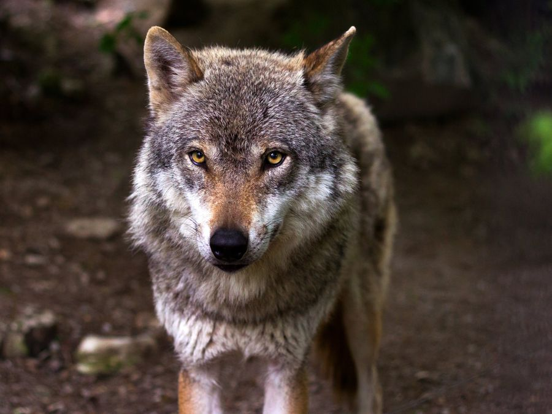

Lobos de Chernobil
desenvolveram mutação que os
protege do câncer
Segundo pesquisa, lobos-cinzentos da zona de exclusão de Chernobil conseguem viver com dose elevada de radiação e ainda podem ser mais resilientes à doença

Em 1986, ocorreu o acidente nuclear de Chernobil, que fez com que a região se tornasse uma das mais radioativas do mundo. Foi criada, inclusive, uma zona de exclusão, que corresponde a uma área de 4.200 km² não considerada segura para habitação humana – mas que, apesar disso, apresenta um ecossistema completo, com grandes predadores como o lobo-cinzento.
Pesquisadores têm realizado estudos para entender como essas populações vivem em meio à radiação de Chernobil. Um trabalho liderado por Cara Love, bióloga evolutiva e ecotoxicologista da Universidade de Princeton, indica que os lobos-cinzentos da zona de exclusão são geneticamente diferentes de lobos-cinzentos encontrados em outros locais. Mais do que isso, os resultados sugerem que os lobos de Chernobil desenvolveram mutações que aumentam as suas chances de sobrevivência ao câncer. As descobertas foram divulgadas em janeiro de 2024 no Encontro Anual da Sociedade de Biologia Integrativa e Comparada, em Seattle, nos Estados Unidos. Para chegar às conclusões apresentadas, foram necessários dez anos de investigação, de acordo com o site IFL Science. Em 2014, a equipe de Love colocou coleiras com GPS em alguns dos lobos – assim, seria possível saber a localização geográfica e o nível de exposição à radiação em tempo real. Eles descobriram que os lobos-cinzentos da zona de exclusão de Chernobil recebem cerca de 11,28 milirem de radiação a cada dia (seis vezes mais do que o limite legal para trabalhadores).